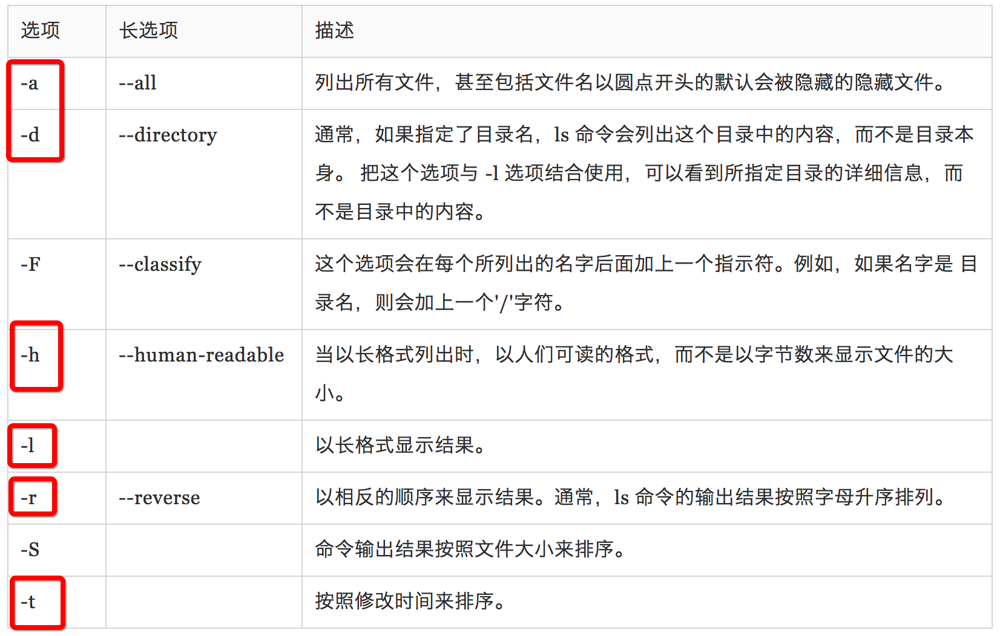
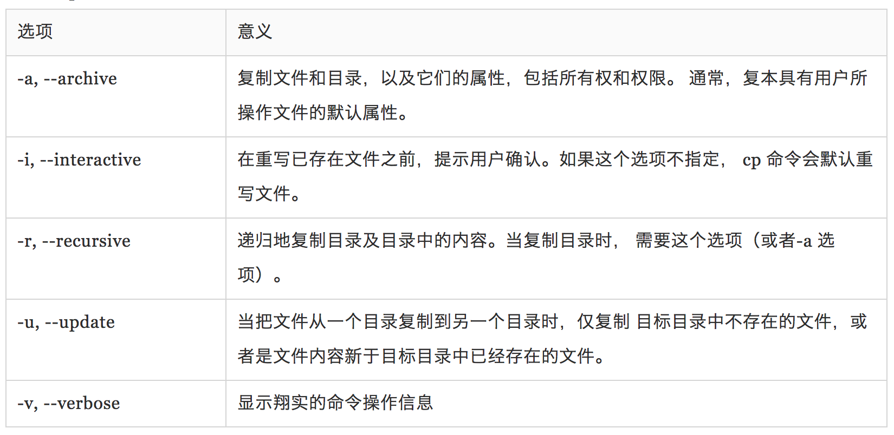
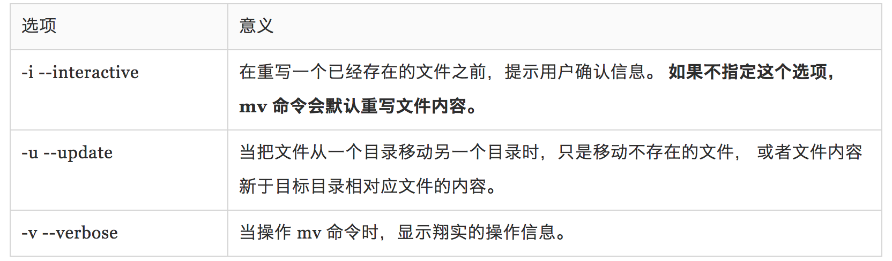
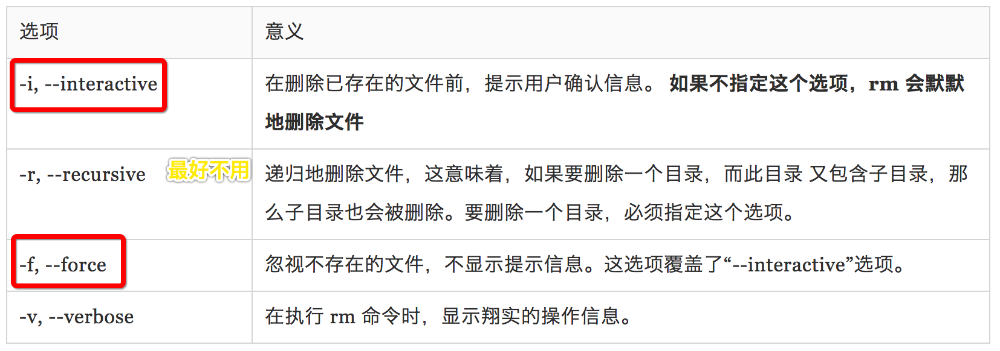
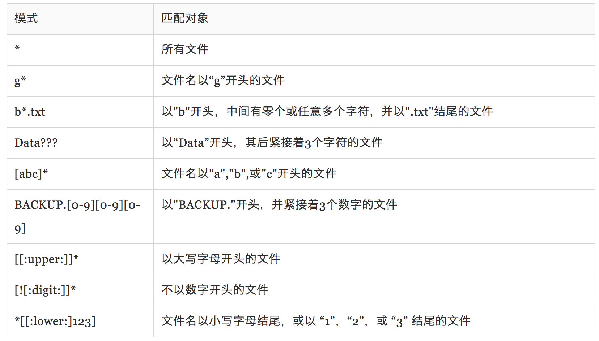
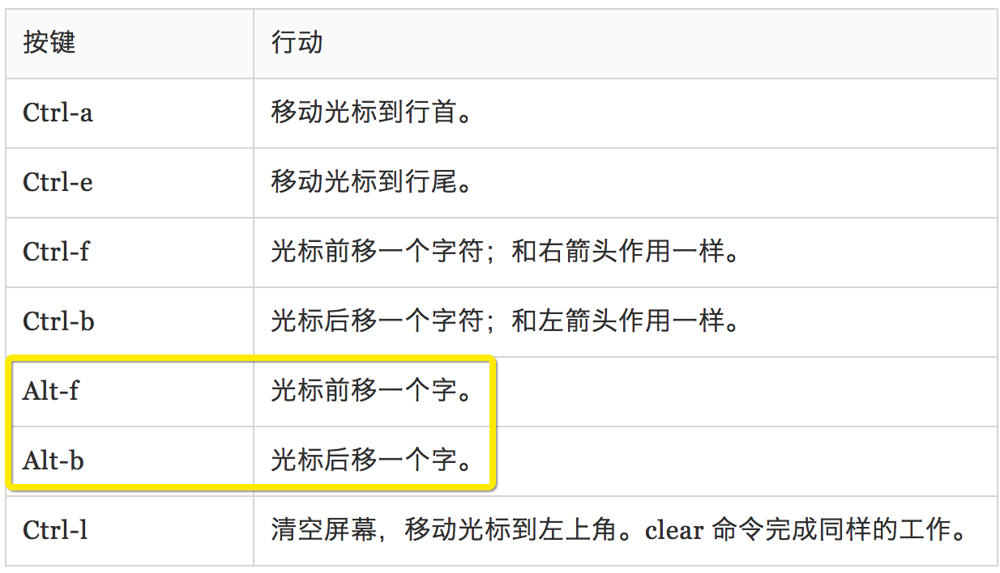
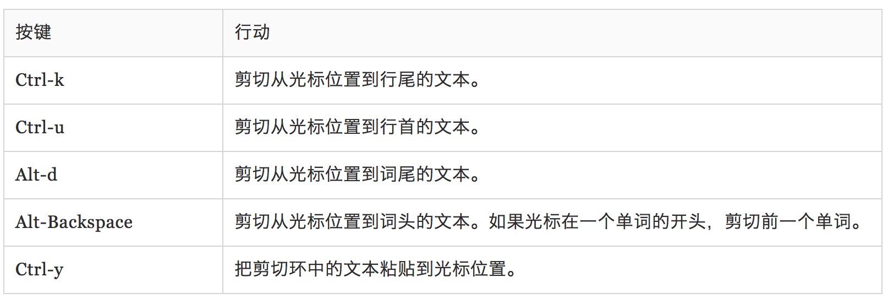

这篇文章是我读 The Linux Command Line 的读书笔记。电子版的书的地址是：TLCL。相比于鸟叔，这本书好在比较少，重点比较突出，大部分里面的命令都是我会经常用到的。缺点是也存在少量冗余的内容。不便于我查找和学习。因此我把我需要的东西从中抽取出来，总结并且提炼，以便日后的查找和学习。此篇笔记📒是书的第一章到第九章。
第一章：什么是 shell🏠
shell 就是一个程序，它接受从键盘输入的命令， 然后把命令传递给操作系统去执行。几乎所有的 Linux 发行版都提供一个名为 bash 的 来自 GNU 项目的 shell 程序。“bash” 是 “Bourne Again SHell” 的首字母缩写， 所指的是这样一个事实，bash 是最初 Unix 上由 Steve Bourne 写成 shell 程序 sh 的增强版。
[me@linuxbox ~]$
- 代表 username@machinename ，后面可能是 $ or #，其中 # 代表了你有 root 权限， 对应的 $ 可能代表的就是普通的用户。
- 一些简单的命令如下：
1 | date 当前时间 |
第二章：文件系统中跳转
相关命令：1
2
3
4
5
6
7pwd 打印出当前工作目录名
cd dir 更改目录
ls 列出目录内容，不包括带 . 的隐藏目录
ls -a 可以列出带 . 隐藏的目录
cd 更改工作目录到你的家目录
cd - 更改工作目录到先前的工作目录
cd ~user_name 更改工作目录到用户家目录
第三章：探究操作系统
相关命令：1
2
3
4
5
6
7ls 列出目录内容
file 确定文件类型
less 浏览文件内容
ls -l 使用 ls 命令的“-l”选项，则结果以长模式输出 === ll
ls -lt "t"选项按文件修改时间的先后来排序
file filename 查看文件的类型
命令格式
命令名经常会带有一个或多个用来更正命令行为的选项， 更进一步，选项后面会带有一个或多个参数，这些参数是命令作用的对象。
2
ls -lt --reverse
options : 选项, 一般是 -l 这种形式，也支持长选项，长选项由两个中划线加上一个字组成。如 --reverse。 当然也有两种合并的。如上。
下面这张图来源于书里的对ls的命令的一部分列举，红色的框是我经常用的：

less
less 命令是一个用来浏览文本文件的程序,less 程序允许你前后滚动文件。
格式为： less filename
如 less a.log
如 ps -ef | less 以分页的形式查看当前进程 (这个好用)

上面这个图里是不是感觉跟 vim 命令很像，我再补充几个，是我经常用到的：
1 | - /字符串：向下搜索"字符串"的功能 |
第四章：操作文件和目录
主要命令有：1
2
3
4
5- cp — 复制文件和目录
- mv — 移动/重命名文件和目录
- mkdir — 创建目录
- rm — 删除文件和目录
- ln — 创建硬链接和符号链接
这几个命令我们最熟悉不过了。下面简单的列举了这几个的一些基本用法。
cp 复制文件和目录

1 | // 若 file2 存在，则覆盖or重写，若不存在则创建 |
mv 移动和重命名文件

1 | // 如果 file2 存在，它的内容会被 file1 的内容重写。 |
rm - 删除文件和目录
1
2
3
4
5
6
7
8
9
10
11// 默默地删除文件
rm file1
// 除了在删除文件之前，提示用户确认信息之外，和上面的命令作用一样
rm -i file1
// 删除文件 file1, 目录 dir1，及 dir1 中的内容
rm -r file1 dir1
// 同上，除了如果文件 file1，或目录 dir1 不存在的话，rm 仍会继续执行。
rm -rf file1 dir1
不要用 rm -rf, 用 rm -ri 吧，给自己一点后悔的余地。
ln — 创建链接
建立符号链接的目的是为了克服硬链接的两个缺点：硬链接不能跨越物理设备， 硬链接不能关联目录，只能是文件。符号链接是文件的特殊类型，它包含一个指向 目标文件或目录的文本指针。
2
3
4
5
6
ln file link
// 创建符号链接（soft）
ln -s 源文件 目标文件
ln -s item link
关于这里我有一些实际可以用到软硬链接的场景。稍后再补充。
通配符
书里先简单的讲了下通配符，我觉得只看例子就好了。

第五章：使用命令
主要的几个有：1
2
3
4
5
6
7- type – 显示命令的类型
- which – 显示一个可执行程序的位置
- man – 显示命令手册页
- apropos – 显示一系列适合的命令
- info – 显示命令 info
- whatis – 显示一个命令的简洁描述
- alias – 创建命令别名
下面举一些例子，这个更好理解一些：1
2
3
4
5
6
7
8
9
10
11
12
13
14
15
16
17
18
19
20
21
22// type 命令是 shell 内部命令，它会显示命令的类别，给出一个特定的命令名（做为参数）
type ls => ls is an alias for ls -G
type cd => cd is a shell builtin
type type => type is a shell builtins
// 这个命令只对可执行程序有效，不包括内建命令和命令别名
which node => /usr/local/bin/node
which npm => /usr/local/bin/npm
// 输入“help”，接着是 shell 内部命令名, 注意后面跟的一定要是 builtin commands
help cd
help help
// --help - 显示用法信息,它不要求是 builtin commands, 是可执行程序即可
mkdir --help | less
tar --help
// 许多希望被命令行使用的可执行程序
// 提供了一个正式的文档，叫做手册或手册页(man page)。
// 一个特殊的叫做 man 的分页程序，可用来浏览他们。
man which
man ls
关于 alias 我觉得很好用，单独拿出来：
语法是： alias name='string'实际上我们平时写 命令 时，是可以几个一起写的，比如 cd /usr; ls; cd -。如果这个命令你经常用，而且不想要每次都打折三个命令，那么你可以把它做成一个别名。这样每次就可以很方便的切换了。如我们给上面一个命令起名叫 test, 在每次起别名前，记得用 type 试下，看这个别名是否被占用了。
1 | // bash: type: foo: not found 可以创建为别名 |
第六章：重定向
”I/O”代表输入/输出， 通过这个工具，你可以重定向命令的输入输出，命令的输入来自文件，而输出也存到文件。 也可以把多个命令连接起来组成一个强大的命令管道。
主要的命令有：1
2
3
4
5
6
7
8- cat － 连接文件
- sort － 排序文本行
- uniq － 报道或省略重复行
- grep － 打印匹配行
- wc － 打印文件中换行符，字，和字节个数
- head － 输出文件第一部分
- tail - 输出文件最后一部分
- tee - 从标准输入读取数据，并同时写到标准输出和文件
标准输出重定向
1 | ls -l ls-output.txt |
标准错误重定向
标准错误重定向没有专用的重定向操作符。为了重定向标准错误，我们必须参考其文件描述符。 一个程序可以在几个编号的文件流中的任一个上产生输出。虽然我们已经将这些文件流的前 三个称作标准输入、输出和错误，shell 内部分别将其称为文件描述符0、1和2。shell 使用文件描述符提供 了一种表示法来重定向文件。因为标准错误和文件描述符2一样，我们用这种 表示法来重定向标准错误：
1 | // 当 /bin/usr 不存在时报错将输出到 ls-error.txt 中 |
处理不需要的输出
有时候“沉默是金”，我们不想要一个命令的输出结果，只想把它们扔掉。这种情况 尤其适用于错误和状态信息。系统通过重定向输出结果到一个叫做”/dev/null”的特殊文件， 为我们提供了解决问题的方法。这个文件是系统设备，叫做位存储桶，它可以 接受输入，并且对输入不做任何处理。为了隐瞒命令错误信息，可以像下面这样做。1
2// 处理不需要的输出
ls -l /bin/usr 2> /dev/null
上面的比较少用到，基本上我之前没有用到过。
标准输入重定向
cat 命令
1 | // cat 命令读取一个或多个文件 |
管道线
命令从标准输入读取数据并输送到标准输出的能力被一个称为管道线的 shell 特性所利用。 使用管道操作符”|”（竖杠），一个命令的标准输出可以通过管道送至另一个命令的标准输入：
1 | command1 | command2 |
管道线经常用来对数据完成复杂的操作。有可能会把几个命令放在一起组成一个管道线。 通常，以这种方式使用的命令被称为过滤器。过滤器接受输入，以某种方式改变它，然后 输出它。
1 | ls /bin /usr/bin | sort | less |
uniq - 报道或忽略重复行
1 | // 列表中不包含重复句子 |
wc － 打印行数、字数和字节数
1 | // wc（字计数）命令是用来显示文件所包含的行数、字数和字节数 |
grep － 打印匹配行
grep 是个很强大的程序，用来找到文件中的匹配文本。这样使用 grep 命令：1
2”-i”使得 grep 在执行搜索时忽略大小写（通常，搜索是大小写 敏感的），”-v”选项会告诉 grep 只打印不匹配的行。
ls /bin /usr/bin | sort | uniq | grep zip
head / tail － 打印文件开头部分/结尾部分
1 | // head 命令打印文件的前十行，而 tail 命令打印文件的后十行。 -n 用来指定 |
使用”-f”选项，tail 命令继续监测这个文件，当新的内容添加到文件后，它们会立即 出现在屏幕上。这会一直继续下去直到你输入 Ctrl-c。
tee － 从 Stdin 读取数据，并同时输出到 Stdout 和文件
为了和我们的管道隐喻保持一致，Linux 提供了一个叫做 tee 的命令，这个命令制造了 一个”tee”，安装到我们的管道上。tee 程序从标准输入读入数据，并且同时复制数据 到标准输出（允许数据继续随着管道线流动）和一个或多个文件。当在某个中间处理 阶段来捕捉一个管道线的内容时，这很有帮助。这里，我们重复执行一个先前的例子， 这次包含 tee 命令，在 grep 过滤管道线的内容之前，来捕捉整个目录列表到文件 ls.txt：1
ls /usr/bin | tee ls.txt | grep zip
从 shell 眼中看世界- Echo
1 | - echo － 显示一行文本 |
利用 echo 你可以做下面这些事情。这个 echo 跟 php 里的 echo 非常的像。1
2
3
4
5
6
7
8
9
10
11
12
13
14
15
16
17
18
19
20
21
22
23
24
25
26
27
28
29
30
31
32
33
34
35
36
37
38
39
40
41
42
43
44
45
46
47
48
49
50
51
52
53
54
55
56
57echo this is a test
// this is a test
echo *
// Applications Desktop Documents Downloads Library Movies Music Pictures Public
echo D*
// Desktop Documents Downloads
echo *s
// Documents Pictures Templates Videos
echo [[:upper:]]*
// Desktop Documents Music Pictures Public Templates Videos
echo /usr/*/share
// /usr/a/share /user/b/share
echo ~
// /Users/sevencai
echo $((2 + 2))
// 4
echo $(($((5**2)) * 3))
// 5*5 *3 = 75
echo Front-{A,B,C}-Back
// Front-A-Back Front-B-Back Front-C-Back
echo Number_{1,5}
// Number_1 Number_2 Number_3 Number_4 Number_5
echo $USER
// sevencai
// 查看有效变量
printenv | less
// 命令替换
echo $(ls)
ls -l $(which cp)
// 在默认情况下，单词分割机制会在单词中寻找空格，制表符，和换行符，并把它们看作 单词之间的界定符。这意味着无引用的空格，制表符和换行符都不是文本的一部分， 它们只作为分隔符使用。由于它们把单词分为不同的参数，所以在上面的例子中， 命令行包含一个带有四个不同参数的命令。
echo this is a test
// this is a test
// $1 当做第一个变量，因为 `1` 是没有定义的变量，所以为空
echo The total is $100.00
// The total is 00.00
// 在双引号中，参数展开、算术表达式展开和命令替换仍然有效
echo "$USER $((2+2)) $(cal)"
echo "this is a test"
// this is a test
这里我觉得大致的了解下就行。因为真实情况下，我用到的非常非常少。
键盘高级技巧
移动光标

剪切复制

总结
今天就到这里吧，我担心因为今天已经看了很多了，就后面把这个看完这本书记录下来当做任务去完成了，这样违背了我的初衷。所以有效的时间，做正确的事情。改天我再来总结后面几章节。
回家🌶啦，✈️明天去接我的小狗狗，可乐！！！ 嘻嘻。开心。开心。